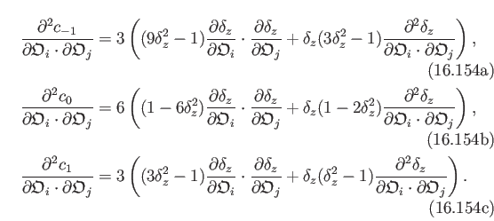
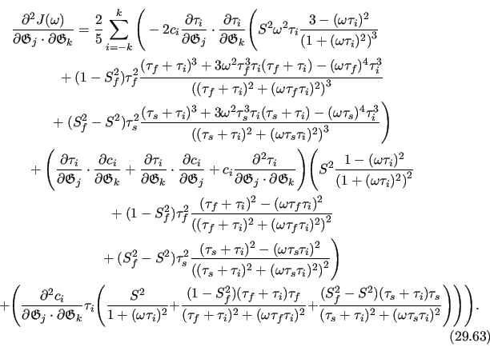

Next: Parallelization and running on Up: Computation time and the Previous: Computation time and the Contents Index
The numerical integration is approximated as
| f dV V〈f〉±V, | (12.83) |
where the angular brackets are the means. As the average PCS value in the frame order models is defined as
| (12.84) |
then
| (12.85) |
This simply means that the average PCS value of a set of N domain positions which satisfy the constraints of the current model parameter values can be used as the back-calculated PCS value for the model.
The simplest method to calculate the PCS value would be to generate a uniform distribution of domain positions. The PCS value is calculated for each state in the distribution of N structures and then averaged. However this technique has non-ideal convergence properties, hence the number N needs to be high to obtain a reasonable estimate of the PCS value. Two techniques with better convergence properties are the Monte Carlo integration algorithm and the quasi-random integration algorithms.
As the convergence properties are better than that of a uniform distribution, the Monte Carlo integration algorithm is a viable option for using the PCS in the frame order analysis. Less states N are required for a reasonable estimate of the back-calculated PCS value. By randomly selecting N orientations of the domain which lie within the cone half-angle limits, back-calculating the PCS value for each state, and then averaging over all N states, the PCS value for the model can be numerically integrated. The original implementation used this technique.
Although the Monte Carlo numerical integration algorithm is a huge improvement on both the quadratic integration and the uniform distribution numerical integration techniques, it was nevertheless still too slow for optimising the frame order models. Therefore the quasi-random integration techniques were investigated, specifically using the Sobol' point sequence (Sobol', 1967).
To implement the numerical integration of the PCS using the quasi-random Sobol' sequence, the LGPL licenced Sobol library of John Burkardt and Corrado Chisari from http://people.sc.fsu.edu/~jburkardt/py_src/sobol/sobol.html was integrated into the relax library.
For each point coordinate si, the following functions were used to translate from linear space sampling to rotational space
|  |
where θ is the frame order tilt angle (the angle of rotation about the x-y plane rotation axis), φ is the angle defining the x-y plane rotation axis, and σ is the torsion angle (the angle of rotation about the z' axis). Each frame order model uses a different set of θ, φ, and σ angles, therefore 1D, 2D, and 3D Sobol' sequences are generated.
As generating Sobol' points is computationally expensive, for speed this operation occurs during target function initialisation prior to optimisation. Hence the Sobol' points are not dynamically generated and a special algorithm is required to ensure adequate 1D, 2D and 3D sampling in the torsion-tilt angle space. The problem is that as the number of dimensions M increases, the density of a fixed N number of points in the M dimensions decreases. For example if a fixed value of N is chosen so that the pseudo-ellipse model is properly sampled, then the rotor model will be severely oversampled and take far too long to optimise. The protocol implemented to avoid this problem is:
During optimisation, the following two checks are implemented:
For most cases, N should be reached. However if the cone or torsion half-angles are extremely small, then the points used may be less than N. This is therefore monitored and printed out after each optimisation step. For these cases, Ov can be increased for better sampling. This is implemented in the frame_order.sobol_setup user function.